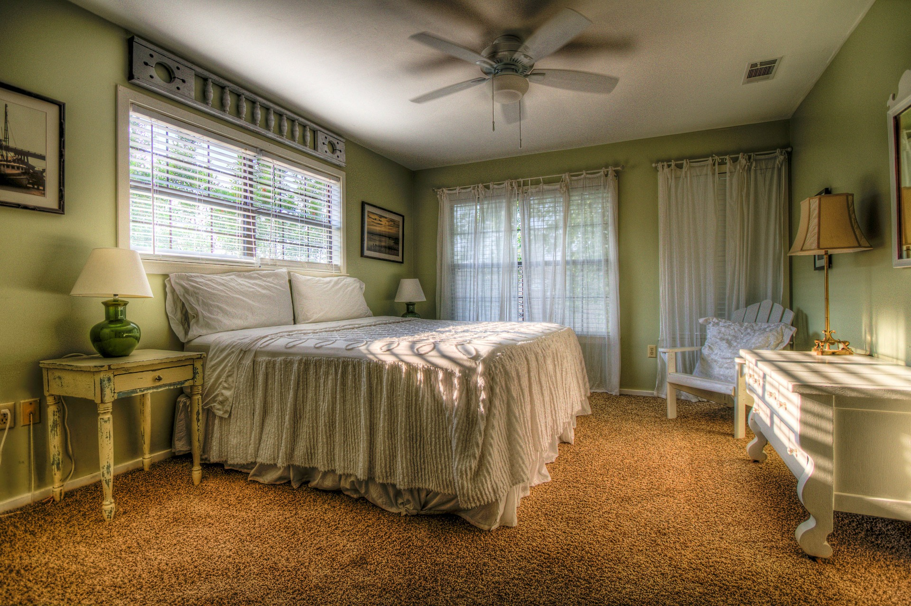

Tandil, una ciudad con un gran espíritu de pueblo, posee un paisaje agreste contorneado por unas bellísimas sierras, cascadas, arroyos y bosques antiguos. Está situada al sudeste de la provincia de Buenos Aires, dentro de la región de la pampa húmeda y en el sistema orográfico de Tandilia. Esta increíble ciudad está caracterizada por la serranía formando un paisaje con un clima ideal a 179 metros sobre el nivel del mar. El clima es húmedo y, durante el invierno, experimenta un incremento en las precipitaciones y heladas. La temperatura media anual es de 16º C con un promedio de temperaturas máximas de 25º C y mínimas de 6º C. Los meses con más fríos son junio, julio y agosto.
Los turistas que nos acompañan, visitan el famoso paseo de “El Calvario” durante Semana Santa, el cerro Centinela, el dique, el parque Independencia y la reserva natural sierra del Tigre son los atractivos que convocan a los visitantes en Tandil. La ciudad y sus alrededores son un sitio ideal para el turismo aventura, entre sus actividades se destacan la práctica de parapente, ala delta, mountain bike, trekking, paseos en cuatriciclo, cabalgatas, kayak y montañismo; contando en la mayoría de estas actividades con instructores y guías especializados.